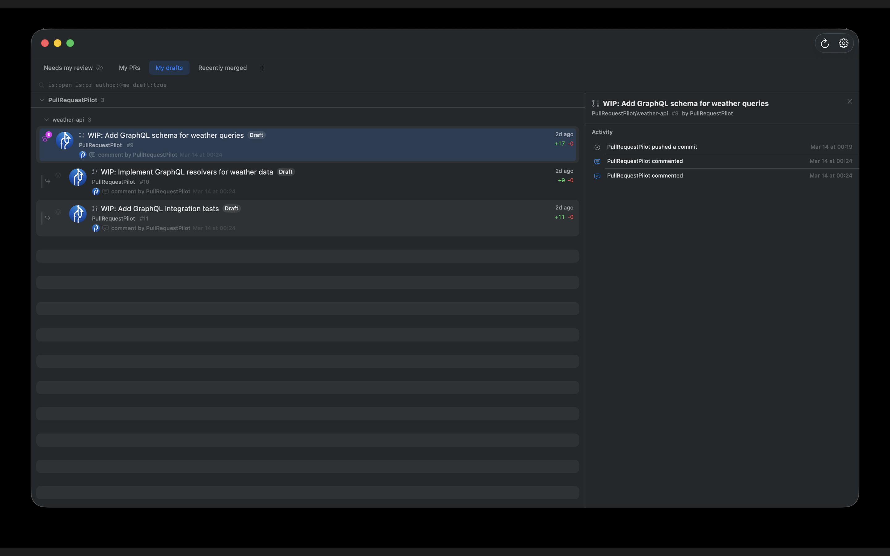

Pull Request Pilot
Stay on top of your GitHub pull request review queue.
macOS 14+
SwiftUI
No dependencies
Stay on top of your GitHub pull request review queue.
Create custom views to organize PRs the way you work — needs my review, my PRs, my drafts, recently merged, or build your own with GitHub search filters. See PR details, labels, review status, and recent activity at a glance.
Add desktop widgets to keep your review queue visible at all times — from a simple count to a full PR list, in multiple sizes.
Get notified when new pull requests appear in any of your views so you never miss an update.

Built natively with SwiftUI. No external dependencies, no tracking, no data collection.
Requires macOS 14 (Sonoma) or later.